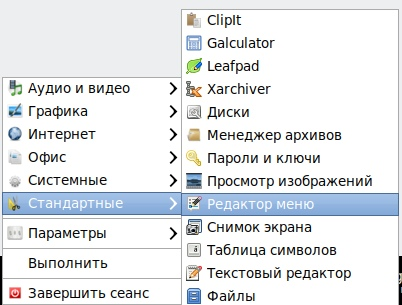
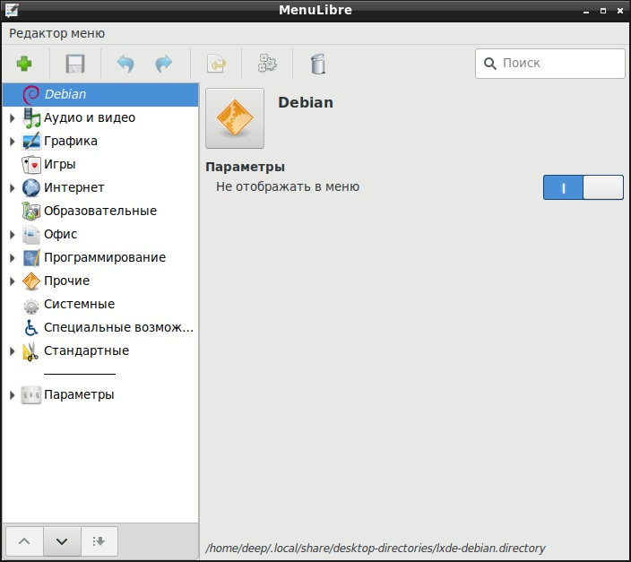

К сожалению, в 2019 году, в оконной среде LXDE так и не появилось стандартного редактора меню. Хорошая новость состоит в том, что меню можно редактировать через сторонние программы. Это возможно благодаря тому, что LXDE хранит меню в стандартном формате, описанном в стандартах FreeDesktop.
Для редактирования меню LXDE можно воспользоваться программой MenuLibre. Данная программа устанавливается из пакета menulibre. После установки, редактор меню доступен по следующему пути:

Само окно редактирования меню выглядит так:

После изменения пункта меню, обязательно нужно не забыть нажать кнопку сохранения (сохраняется не просто все меню, а именно измененный пункт меню).
Особенности интерфейса:
Вся программа сделана очень странно, добавленные новые пункты меню не всегда появляются в меню, требуются неоднозначные шаманские действия чтобы новый пункт отобразился в меню в нужном месте.